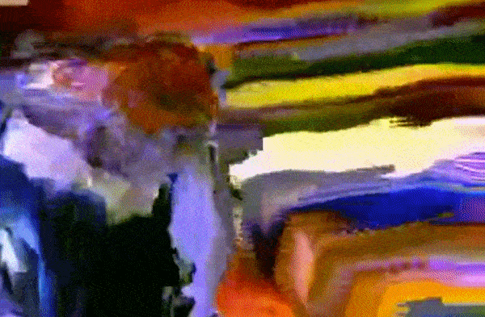

Applied to artworks that incorporate, depict, or recreate technological errors—or
“glitches”—such as static, spliced or distorted images, and computer bugs or viruses.
img1

project
Monster Movie
A pioneer of datamoshing—a form of glitch art that manipulates compression frames to give them an overly pixelated appearance— Takeshi Murata is best known for his psychedelic animated videos. More recently Murata has created digital still lifes that depict outmoded technological detritus and symbols of mortality, combined with miscellaneous objects such as beer bottles, lemons, and VHS tapes. Murata creates these objects using CGI technology that give the illusion of three-dimensionality, in effect producing updated Dutch vanitas images for the digital age.